Accueil
Stages
Projets
Contact
Mentions légales
Secret caché
Présentation de mes Projets
Projet du Stage de Première Année :
Durant mon stage de Première Année, on m'a donné 4 semaines pour ajouter une section Signataire pour gérer les signatures sur les documents PDF générés sur la version Web SAAS de leur logiciel.
Pendant ces 4 semaines, j'ai participé aux différentes réunions d'ouverture et de fermetures de sprint où les tickets distribués/validés. Les différents intervenants étaient mon maître de stage, le scrum master et le directeur commercial. Le Livrable était le code qui permettait de régler le ticket attribué et il était envoyé et fusionné sur Github.
J'ai d'abord commencé par faire un schéma de ce à quoi l'onglet Signataire ressemblerai. Ensuite, avec l'aide de mon maître de stage, j'ai participé et finalisé la création des SPECS. Ensuite, j'ai codé le front pour faire le faire apparaître sur le logiciel. Voici quelques images :
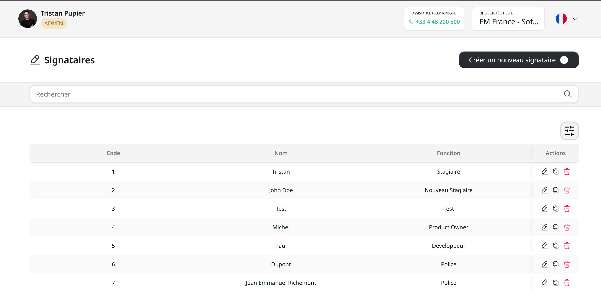
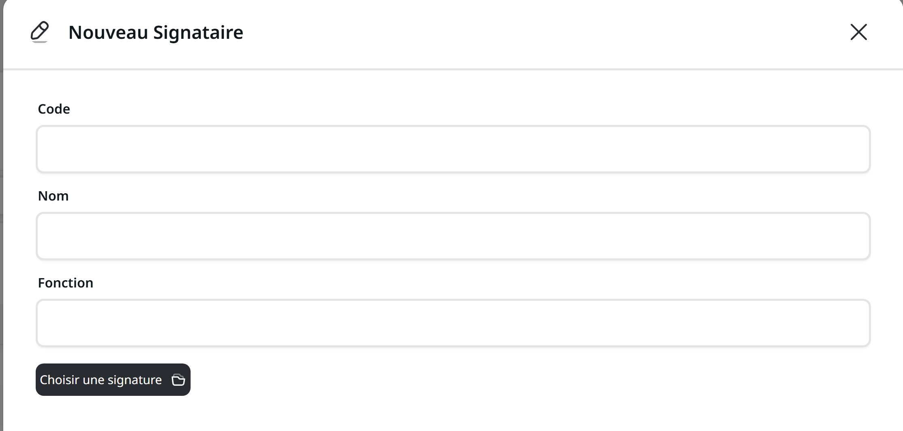
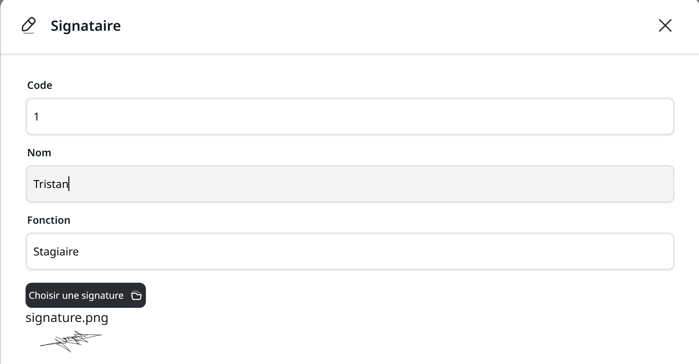
Ensuite, avec l'aide de mes collègues, nous avons créé une table Signataire dans la base de donnée avec Prisma. Cela m'a permis de m'attaquer à la partie Back de mon projet (Base de donnée & API) afin de pouvoir créer, modifier et dupliquer mes signataires.
Pour finir, j'ai intégré les signataires aux autres parties du logiciel pour pouvoir intégrer les signatures aux documents PDF que le logiciel créé.
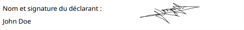
Projet du Stage de Deuxième Année :
Durant mon stage de Deuxième Année, on m'a assigné à un nouveau logiciel dont le développement venait de commencer. J'ai eu 6 semaines pour ajouter les modules des Contacts, des Assistances, des Formations et des Contrats sur ce nouveau logiciel pour permettre à mon collègue de continuer le développement plus facilement.
Pendant 6 semaines, j'ai, une nouvelle fois, participé aux différentes réunions d'ouverture et de fermetures de sprint. Le Livrable était encore une fois du code qui permettait de régler le ticket attribué et il était envoyé et fusionné sur Github après vérification.
Je me suis appuyé sur la maquette de mon collègue pour créer le front et je l'ai fait apparaître sur le logiciel. Voici quelques images :
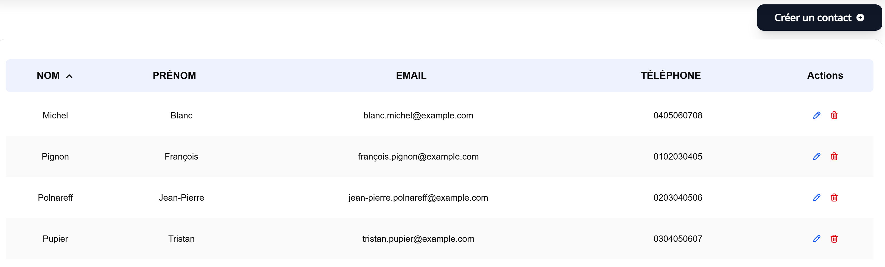
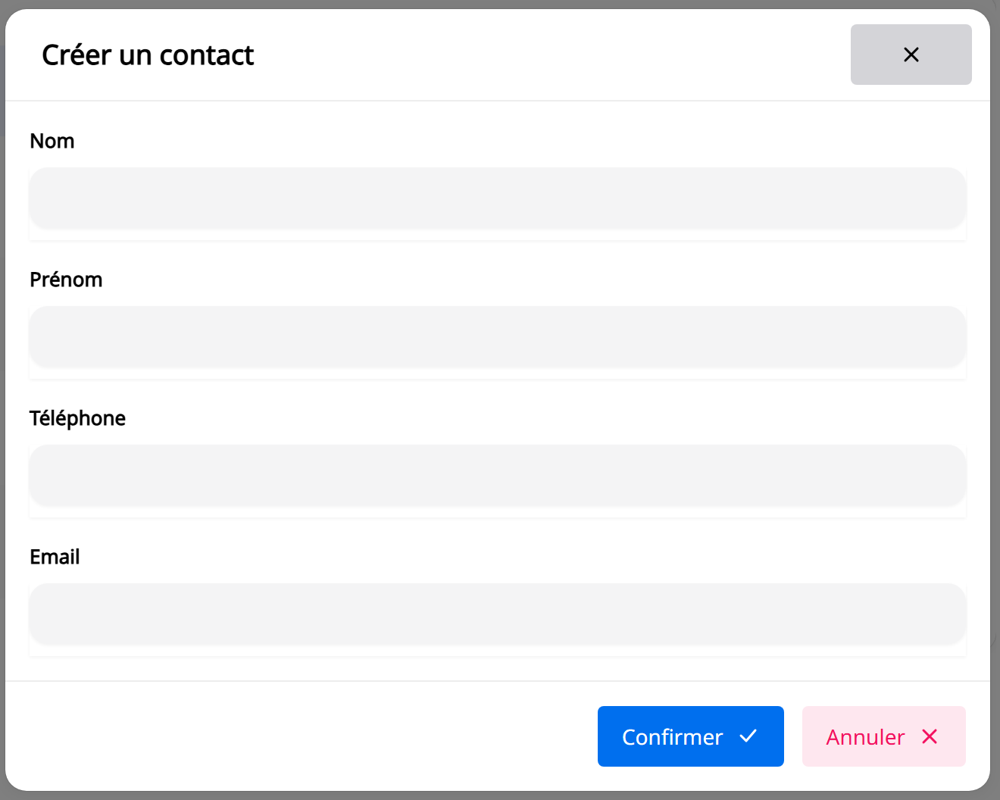
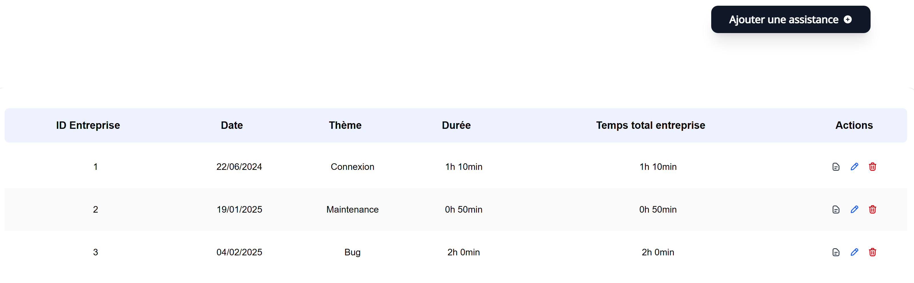
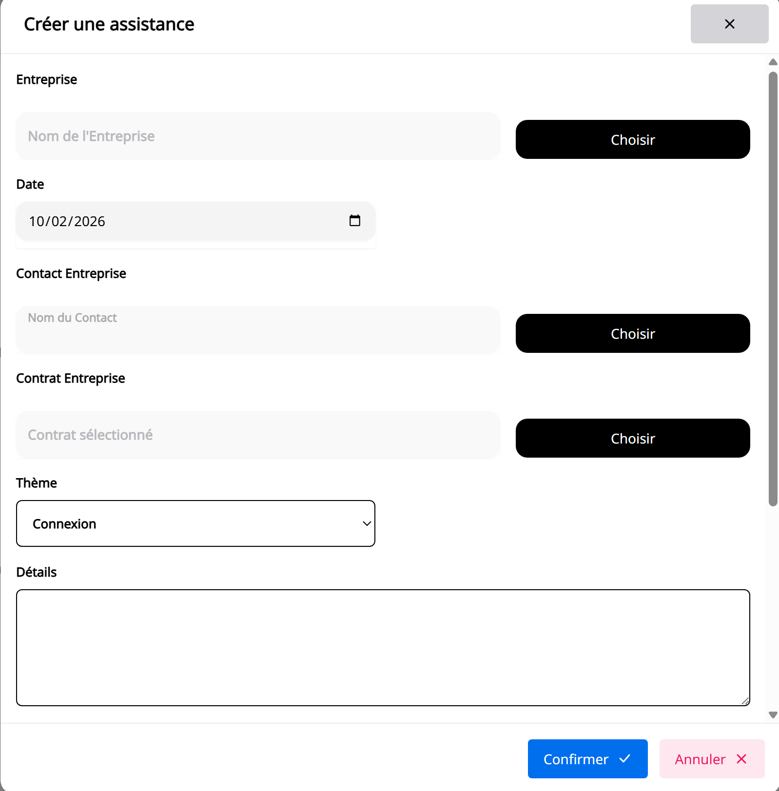
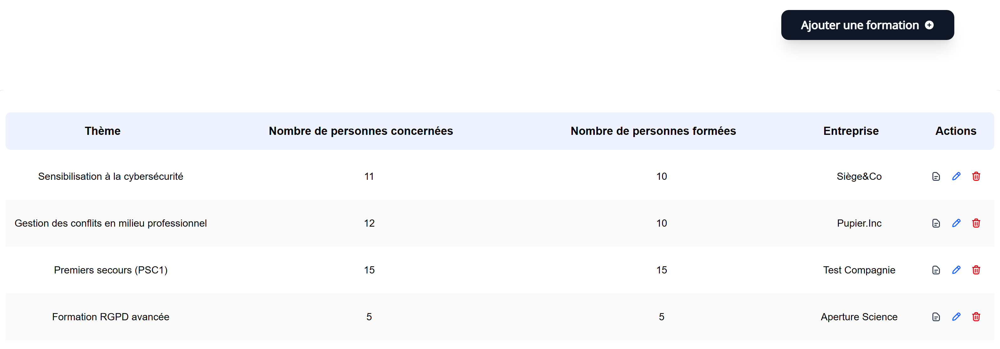
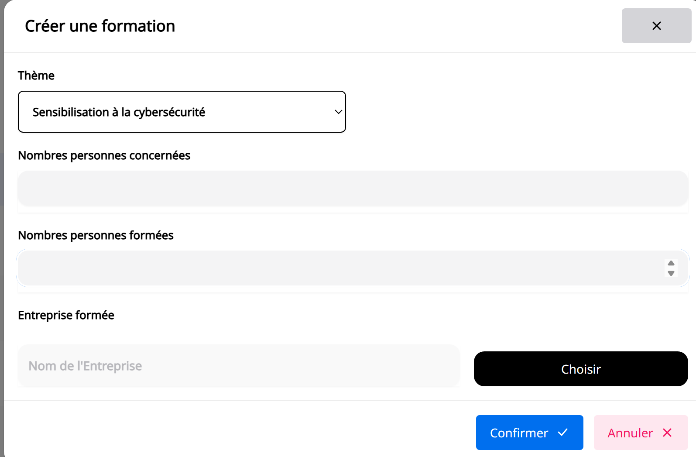
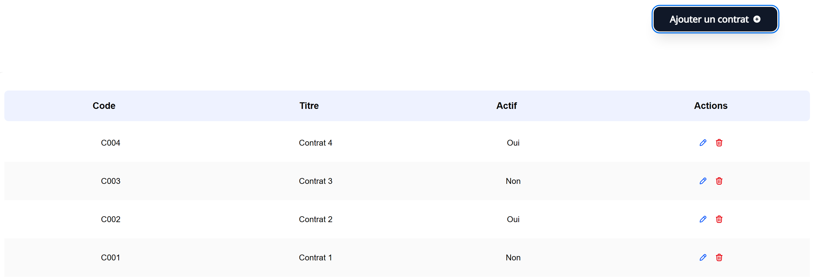
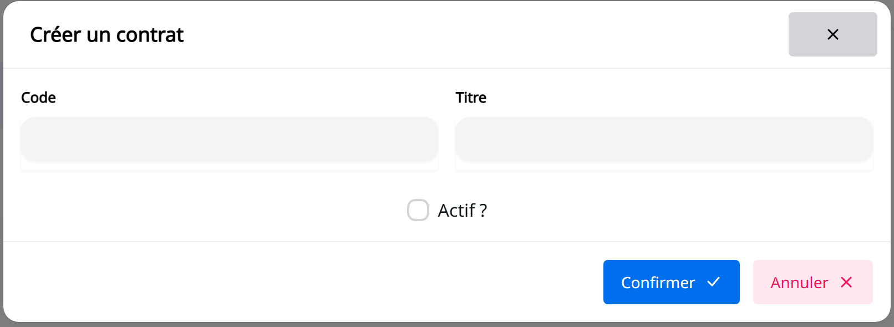
Ensuite, j'ai lié mes modules à la base de données existante tout en créant les routes API pour pouvoir communiquer avec le backend (Récupérer, Créer, Modifier et Supprimer).
Pour finir, j'ai intégré mes modules au module entreprise du logiciel pour permettre lier les modules à une entreprise.
Autres Projets :
Multiburo :
Le but de ce projet était de pouvoir voir les ressources d'un bâtiment fictif pour un jour précis puis de pouvoir en réserver une. "From Scratch", j'ai créé un site en PHP et une base de données HeidiSQL.
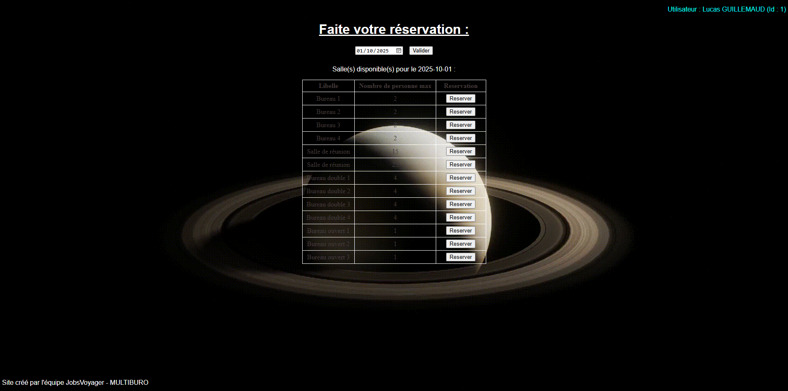
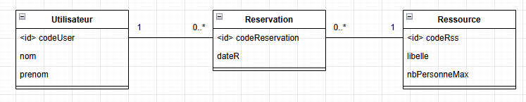
Scrabble :
À partir d'une version fonctionnelle en C# du jeu du Scrabble, je l'ai améliorée pour pouvoir jouer à deux joueurs, enregistrer une partie et voir l'historique des parties. J'utilise une API Dictionnaire pour pouvoir vérifier les mots rentrés durant la partie ainsi qu'une base de données HeidiSQL pour stocker l'historique des parties.
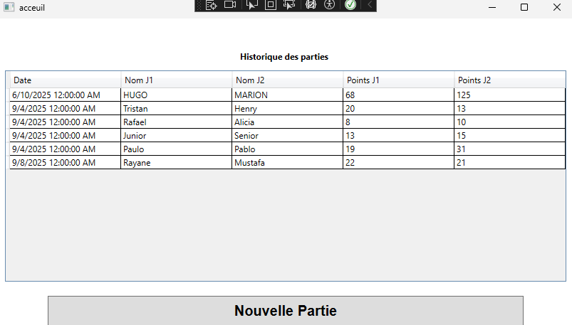
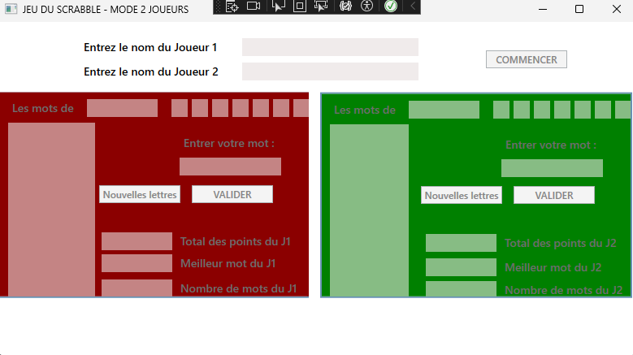
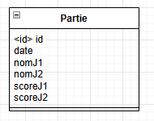